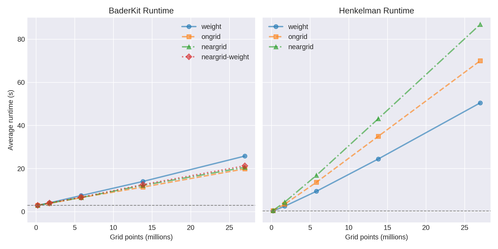
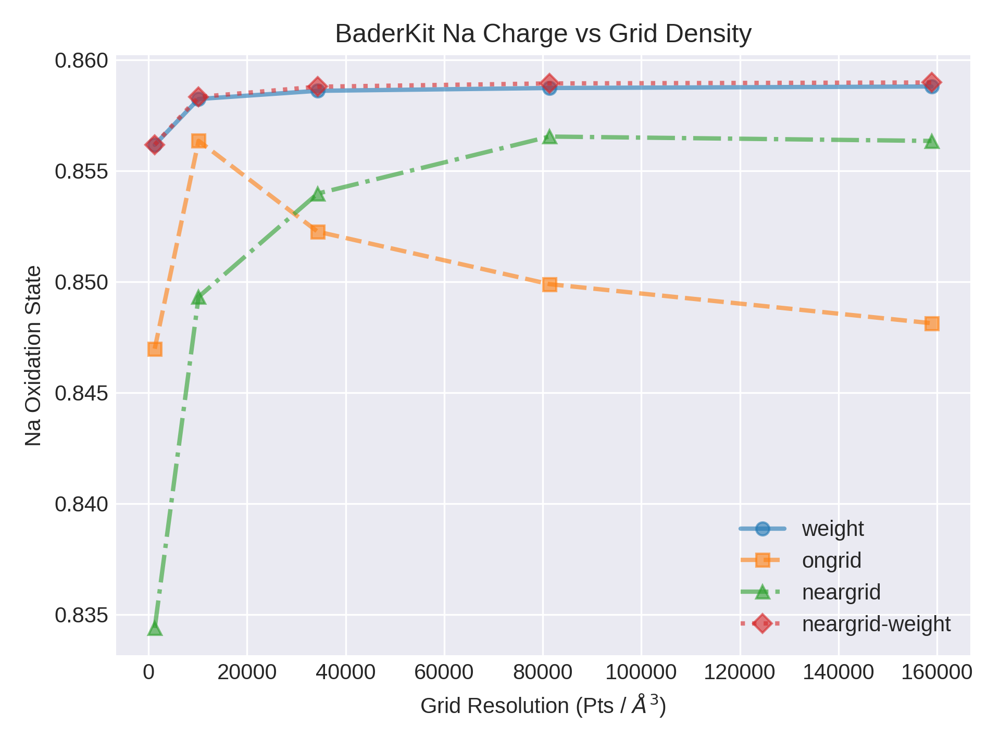
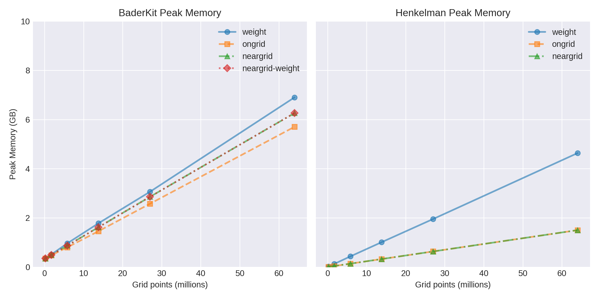
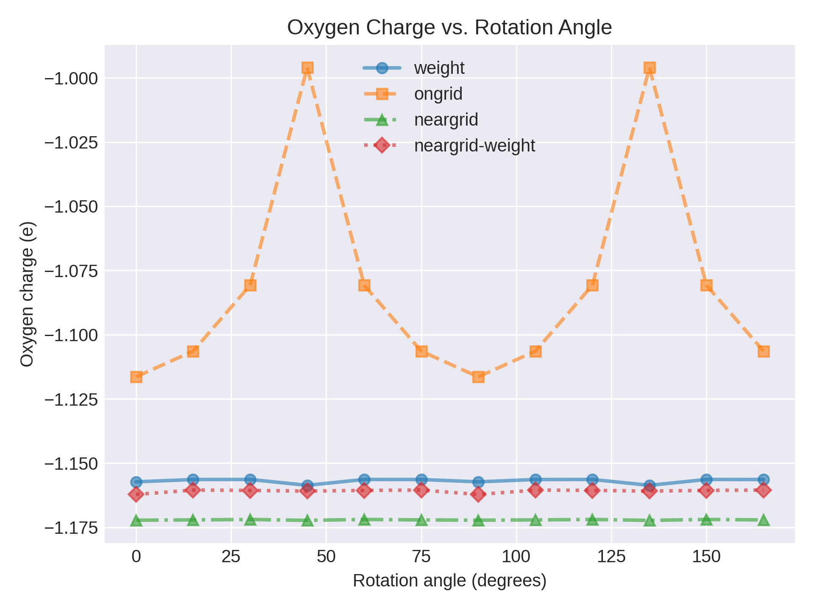

Methods and Benchmarks¶
Through the years, several methods for performing grid-based Bader assignment have been developed. BaderKit includes each of the methods available in the Henkelman group's code as well as one developed by our own group. Here we provide brief descriptions for each and benchmark them to assist in selecting the one most appropriate for you. Additionally, we provide information on how BaderKit's implementation differs from the original Fortran code.
Methods¶
Below is a summary of the benchmarks and suggested use cases for each method. Values are based on a computer with 16 cores and 32 GB of memory. We suggest doing your own tests for your system.
| Method | Speed (s/atom)1 | Converged Grid Density (pts/Å3)2 |
Max Atoms1 | Orientation Error (e-)3 |
|---|---|---|---|---|
| neargrid-weight | 0.21 | 8700 | 1140 | 0.0006 |
| neargrid | 0.20 | 63000 | 1140 | 0.0001 |
| weight | 0.26 | 8300 | 1000 | 0.0009 |
| ongrid | 0.19 | >150000 | 1250 | 0.04 |
- Assuming ~30 Å3 per atom and a resolution of 10000 pts/Å3
- Resolution at which benchmark reached within 0.001 e- of converged value
- Standard deviation of orientation benchmarks
Key Takeaways: A hybrid method with the speed of the neargrid method
and accuracy of the weight method.
This method is a hybrid of the neargrid and weight methods. It first runs the neargrid method, then uses the fractional assignment of the weight method to split the grid points at basin edges. The result is a method that requires minimal additional time over the original neargrid method, but with a convergence rate like that of the weight method.
Key Takeaway: Very fast and memory efficient, but requires a fine grid.
This algorithm was developed by Henkelman et. al. after the ongrid method to fix orientation errors. It assigns each point on the grid to one basin, and its accuracy is therefore very dependent on the grid density.
A gradient vector is calculated at each point using the three nearest neighbors. A step is made to the neighboring point closest to this gradient vector. A correction vector pointing from the new point to the original gradient is calculated to preserve information about the true gradient.
At each step, this correction vector is compounded. If any component of the correction vector is ever closer to a neighboring point than the current one, a correction is made to keep the path closer to the true gradient.
After all of the points are assigned, a refinement must be made to the points on the edge, as the accumulation of the gradient is technically only correct for the first point in the path.
Reference
W. Tang, E. Sanville, and G. Henkelman, A grid-based Bader analysis algorithm without lattice bias, J. Phys.: Condens. Matter 21, 084204 (2009)
Key Takeaways: Converges at rough grid densities. Slightly slower and less memory efficient than other methods.
This method converges quickly with grid density by allowing each point to be partially assigned to multiple basins. To reduce orientation errors, a voronoi cell is generated for each point on the grid to determine its nearest neighbors. A "flux" is calculated from each point to its neighbors using the difference in charge density modified by the distance to the neighbor and area of the shared voronoi facet. The total flux is then normalized to determine the fraction of volume flowing to each neighbor.
Moving from highest to lowest, each point is assigned to basins by assigning the fraction going to each neighbor to that neighbors own fractional assignments, creating a 'weight' corresponding to the portion of each point flowing to a given basin. The ordering from highest to lowest ensures that the higher neighbors have already received their assignment.
Reference
M. Yu and D. R. Trinkle, Accurate and efficient algorithm for Bader charge integration, J. Chem. Phys. 134, 064111 (2011)
Key Takeaways: Fast, but prone to orientation errors. We do not recommend using this method, but it is kept for historical reasons.
This is the original algorithm proposed by Henkelman et. al. It is very fast, but prone to error. It gives slightly different oxidation states for different orientations of a molecule or material.
For each point on the grid, the gradient is calculated for the 26 nearest neighbors, and the neighbor with the steepest gradient is selected as the next point in the path. This path is followed until a maximum is reached or a previous point in the path is hit. In the former case, all of the points in the path are assigned to the maximum, and in the latter they are assigned to the same maximum as the colliding path.
Reference
G. Henkelman, A. Arnaldsson, and H. Jónsson, A fast and robust algorithm for Bader decomposition of charge density, Comput. Mater. Sci. 36, 354-360 (2006)
Benchmarks¶

BaderKit shows improved speeds for all methods. The neargrid-weight
method adds very little additional time over the original neargrid method. In all
cases, loading the charge density from file makes up a bulk of the calculation, resulting
in relatively small differences in each methods speed.

As expected from their original papers, the weight method converges first
followed by the neargrid method. The ongrid method does not converge even
at a resolution >150000 pts/Å3. Our own neargrid-weight method
converges at a similar resolution as the weight method.

BaderKit uses more memory than the original Fortran code in all cases. This is largely due the need to store chunks of data for parallelization. We hope to improve this in the future.

The neargrid, weight, and neargrid-weight methods
show minimal variance with orientation (<0.001 e-), while the ongrid method shows
a large bias.
Speed, convergence, and memory benchmarks were performed on a conventional cubic 8 atom NaCl structure at varying grid densities. The charge density was calculated using the Vienna Ab-initio Simulation Package (VASP) with the PBE GGA density functional, an energy cutoff of 372.85 eV, a 3x3x3 Monkhorst–Pack k-point mesh, and VASP's default GW pseudo-potentials. The unit cell relaxed to a lattice size of 5.53 Å.
Orientation benchmarks were run on a water molecule in a cubic lattice with 270 grid points along each 8.04 Å axis. Calculations were performed using VASP, PBE GGA density functional, an energy cutoff of 400 eV, a 2x2x2 Monkhorst–Pack k-point mesh, and VASP's default PBE pseudo-potentials.
In all cases, the total charge density including the frozen atomic cores was used as the reference grid as suggested in our documentation. This is necessary for accuracy, but results in increased runtme due to the need to load two, possibly very large, files.
All bader calculations were performed using a AMD Ryzen™ Threadripper™ 1950X CPU with 16 cores (2 threads per core).
Speed benchmarks were run 10 times and the average taken to account for minor fluctuations in computational time. Speed tests were run through the command line to capture the entire workflow including file read/write, basin assignment, and atom assignment. The systematic shift in all BaderKit methods is due to the initialization of Python's interpreter.
Implementation Differences¶
-
Maxima/Basin Reduction: In highly symmetric systems it is common for local maxima to be positioned exactly between two or more grid points. This results in adjacent grid points with the same value. The Henkelman group's code treats these as individual maxima/basins, while we combine them to the correct single maximum/basin.
-
Pointers Over Paths: Except for in the
weightmethod, the Henkelman code starts at an arbitrary point and climbs a path to a maximum, assigning points along the way. This is fast as a serial operation, but is difficult to parallelize due to the reliance on knowledge of previously traversed paths. We instead prefer to assign pointers from each point to its highest neighbor in parallel, effectively constructing a forest of trees with roots corresponding to basins. We then utilize a pointer jumping algorithm to efficiently assign each point to its basin. -
Vacuum: By default we remove grid points below a given tolerance, including all negative values. The Henkelman group's code instead removes points with an absolute value below this tolerance.
- Parallelization: As described in All Methods,
we prefer to calculate pointers in
parallel and assign basins with a
pointer jumpingalgorithm. In this method we achieve this by calculating the steepest neighbor for each point in parallel rather than the original method of following the steepest neighbors up a path to a maximum.
-
Iterative Edge Refinement: The original
neargridpaper suggests only one edge refinement is needed. We found this is sometimes not the case, and several refinements may be needed to reach convergence. For example, the original code assigns asymmetrical charges/volumes to symmetrical basins in our test case. We therefore use iterative refinement rather than a single refinement. -
Parallelization: The original method starts at an arbitrary point and constructs a path traveling up the gradient, assigning points along the way. It then refines the edges once, as they may be slightly misassigned. This refinement is necessary because the gradient adjustments are only truly accurate for the starting point in the path. We therefore abandon the initial assignment entirely, instead calculating pointers from each point to its highest neighbor in parallel and reducing with a
pointer jumpingalgorithm. These pointers differ from theongridmethod in that they are calculated using the gradient. The edges are then refined by performing the true hill climbing for each edge point in parallel. The result is identical to the original method with speed comparable to theongridmethod.
-
Weight Basin Reduction: The weight method uses a voronoi cell to determine neighbors and reduce orientation errors. This results in some points being labeled as maxima when they have a lower value than one of their 26 nearest neighbors. This results in many unrealistic basins which can significantly slow down the calculation. We remove these maxima by assigning their full weight to the highest neighbor.
-
Parallelization: Though the
weightmethod involves calculating weights that are dependent on one another, most of the components of the 'flux' used in this calculation are independent. We take advantage of this and calculate the flux in parallel. This comes at the cost of storing the information in memory using an array that is several times the size of the original grid. -
Reversed Assignment: Calculating the weight from high to low requires one to track the partial basin assignments of each point for reference later. We instead move over the data from low to high, adding the weighted charge of each point to its higher neighbors. In this way, the charge/volume is accumulated without the need to track each points partial assignments.
-
Basin Labels: Because the weight method provides fractional assignments, it is difficult to represent each points basin assignment. We opt to assign each point to its neighbor with the highest flux. This results in basin labels for each point, but they are only about as accurate as the
ongridmethod. -
Unknown Bug-fix: We have found that in some cases, particularly in non-cubic systems, the results of our method vary from the original. In particular we often find fewer local maxima (prior to any maxima reduction). As an example, the Henkelman code finds 8 local maxima in our test system while our own code finds 6. After careful examination, we are quite sure the 6 maxima are correct. We are unsure what causes this bug, but it also appears to affect the calculated positions of the basin maxima in the
BCF.datoutput for all systems and slightly affect the calculated charges in many systems.